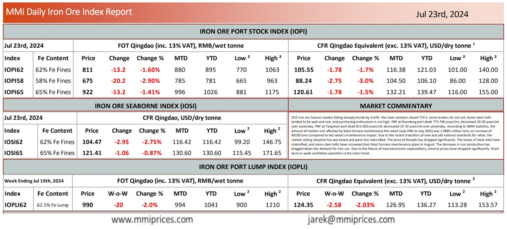

DCE iron ore futures market falling sharply trends by 3.43%. the main contract closed 774.5. some traders do not sell,Some steel mills tended to be wait-and-see, and purchasing enthusiasm is not high. PBF at Shandong port dealt 775-790 yuan/mt; decreased 20-30 yuan/mt over yesterday. PBF at Tangshan port dealt 815-820 yuan/mt; decreased 25-30 yuan/mt over yesterday. According to SMM statistics, the amount of molten iron affected by blast furnace maintenance this week (July 20th to July 26th) was 1.0885 million tons, an increase of 4100 tons compared to last week’s maintenance impact. Due to the recent transition of new and old national standards for rebar, the market selling situation has worsened and panic has intensified. The price of threads has dropped significantly. The losses of steel mills have intensified, and some steel mills have increased their blast furnace maintenance plans in August. The decrease in iron production has dragged down the demand for iron ore. Due to the failure of macroeconomic expectations, mineral prices have dropped significantly. Short term or weak oscillation operation is the main trend.

Download PDFSource: Metals Market Index (MMi)